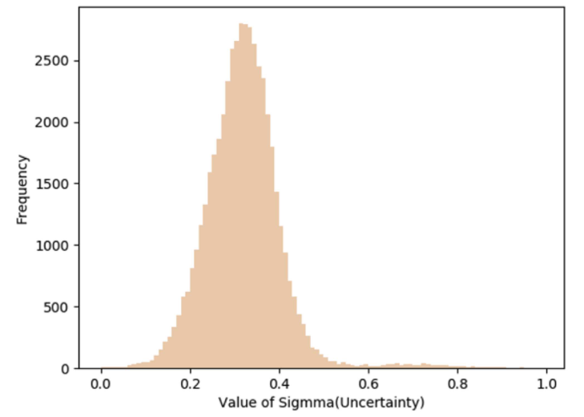
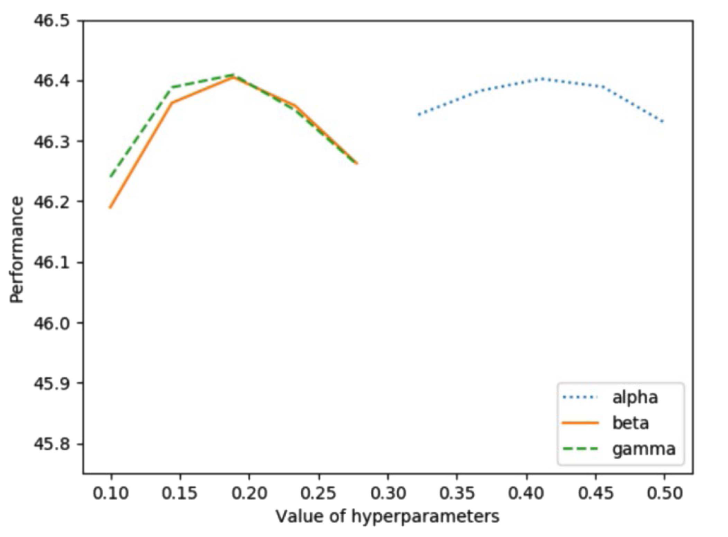

Abstract
Despite the remarkable performance on various Nat- ural Language Processing (NLP) tasks, the parametric complexity of pretrained language models has remained a major obstacle due to limited computational resources in many practical applications. Techniques such as knowledge distillation, network pruning, and quantization have been developed for language model compression. However, it has remained challenging to achieve an optimal tradeoff between model size and inference accuracy. To address this issue, we propose a novel and efficient uncertainty-driven knowledge distillation compression method for transformer-based pretrained language models. Specifically, we design a method of parame- ter retention and feedforward network parameter distillation to compress N-stacked transformer modules into one module in the fine-tuning stage. A key innovation of our approach is to add the un- certainty estimation module (UEM) into the student network such that it can guide the student network’s feature reconstruction in the latent space (similar to the teacher’s). Across multiple datasets in the natural language inference tasks of GLUE, we have achieved more than 95% accuracy of the original BERT, while only using about 50% of the parameters.
Paper & Code & Demo
Experimental Results
Fig. 1. Distribution of sigma values.
Fig. 2. Parameter analysis
Table 1. PERFORMANCE ON DIFFERENT DATASETS

Table 2. EXPERIMENTAL R ESULTS OF DIFFERENT C OMPRESS R ATE N

Citation
@article{huang2023uncertainty,
title={Uncertainty-Driven Knowledge Distillation for Language Model Compression},
author={Huang, Tianyu and Dong, Weisheng and Wu, Fangfang and Li, Xin and Shi, Guangming},
journal={IEEE/ACM Transactions on Audio, Speech, and Language Processing},
year={2023},
publisher={IEEE}
}
Concat
Tianyu Huang , Email: 19171213910@stu.xidian.edu.cn;
Weisheng Dong, Email: wsdong@mail.xidian.edu.cn
Xin Li, Email: xin.li@mail.wvu.edu
Fangfang Wu, Email: wufangfang@xidian.edu.cn
Guangming Shi, Email: gmshi@xidian.edu.cn